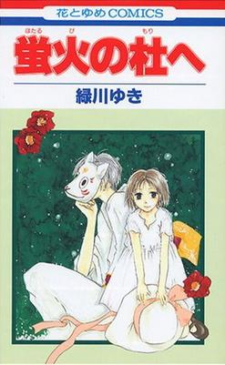
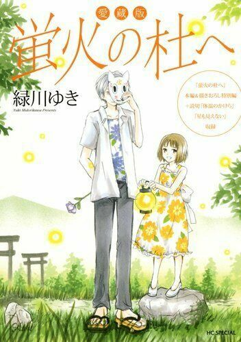
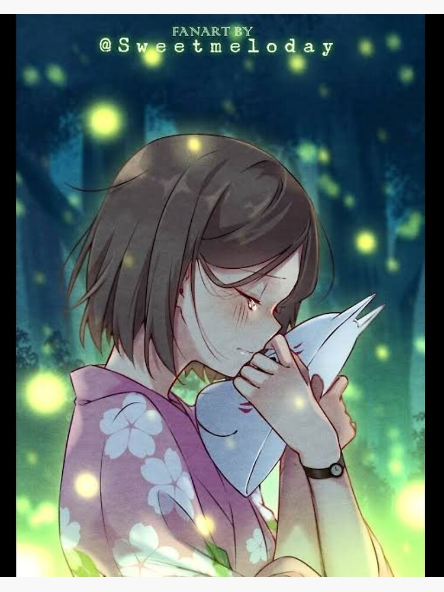

The original Hotarubi no Mori e shōjo manga and subsequent film tell the story of a six-year-old girl named Hotaru Takegawa, who gets lost in a forest inhabited by a mountain spirit, as well as yōkai (strange apparitions from Japanese folklore). She is found by a mask-wearing, human-like entity named Gin, who informs Hotaru that he will disappear forever if he is touched by a human. Gin then leads Hotaru out of the forest. Hotaru returns to visit Gin in the forest over the next few days and they become friends despite the limitations on their interactions. Although at summer's end she must leave Gin to return to the city and her studies, Hotaru promises to return to visit him every summer holiday.As the years go by, Gin hardly ages while Hotaru physically matures and grows closer to his apparent age. Upon reaching adolescence, Hotaru begins to struggle with their budding romance and their uncertain future together, while Gin wishes he could touch and hold the young woman that Hotaru has become. When Hotaru reaches high school, Gin takes her on a date to a festival in the forest hosted by the spirits. The night ends in tragedy when Gin mistakenly touches a young boy who snuck into the spirit festival, though before he disappears, he and Hotaru embrace and confess their love for one another. The story ends with Hotaru accepting her pain and moving on with her life, though she will always treasure the memories of her time with Gin.